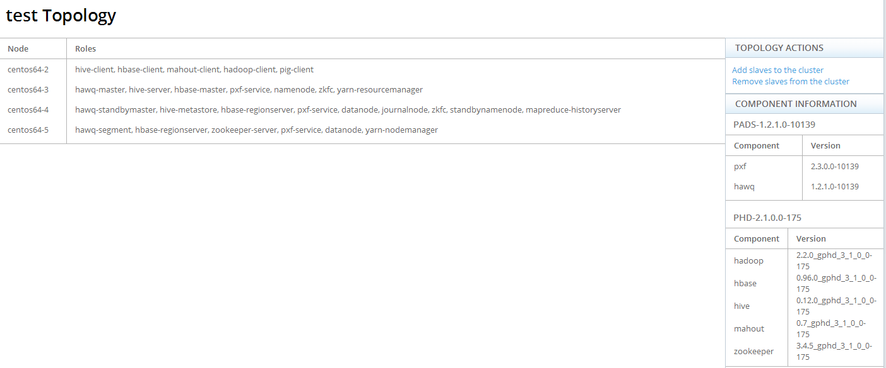

| PCC User Guide / Using PCC | |
This screen shows you the basic topology of your cluster. You can also add/remove slaves to/from the cluster via this screen.
The main portion of this page displays a list of all the nodes in your cluster, and the roles that have been installed on each node.

The Component Information pane lists all the components and versions that are part of your PCC installation.
You can add or remove slaves using the Topology Actions pane.
Additionally for HAWQ and PXF, a slave node contains the following services/roles: hawq-segment, pxf-service.
When you add a slave, these services/roles appear on the node. When you remove a slave node; all these services/roles are removed.
If you do not choose to have the services start automatically, you can start them by returning to the Dashboard, navigating to the role defined for that node, then selecting Action > Start <service_name>. For example: Action > Start Hive.
Highlighted hosts are duplicates and will not be added.
You are warned that prior to removal, services on slave nodes will be stopped.